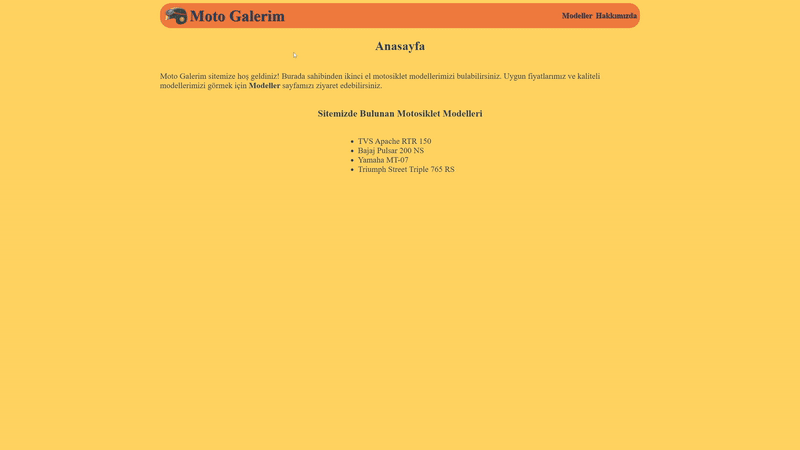
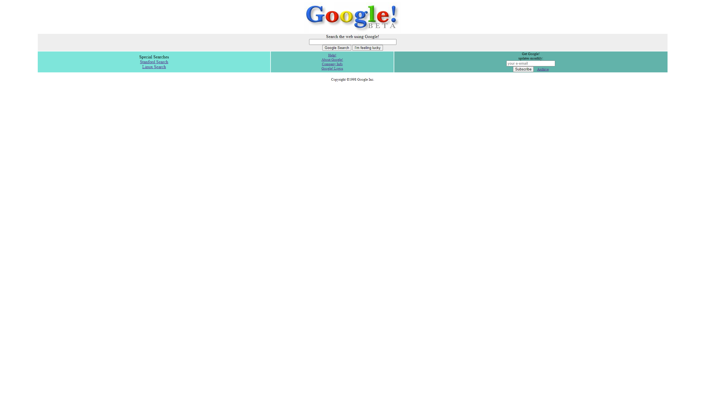
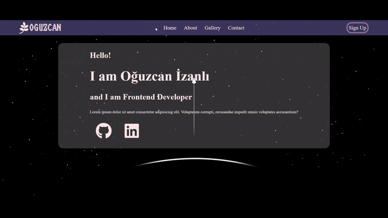

Sayfaya Git
CSS Odev 1 - HTML sayfasına CSS eklemek
External ve internel CSS kullanılarak birkaç sayfadan oluşan bir HTML sayfası oluşturuldu.

CSS Odev 2 - Google Ana Sayfasını Tasarlamak
HTML ve CSS kullanılarak Google anasayfanın tasarımı yapıldı.

Sayfaya Git
CSS Odev Opsiyonel - Google Eski Ana Sayfasını Tasarlamak
HTML ve CSS kullanılarak 1998 yılında ki Google anasayfasının tasarımı yapıldı.

Sayfaya Git
Practise - Hobi Sitesi
CSS ve HTML ile Responsive tasarımdan yararlanılarak, navbar'da sayfa genişliğine bağlı olarak açılıp kapanabilen dropdown tasarlandı.